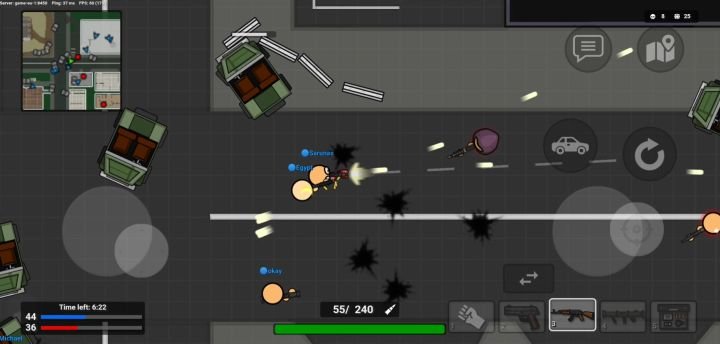
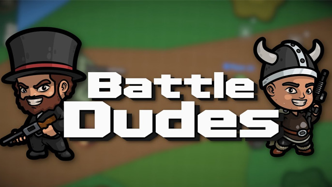

Introduction
BattleDudes.io is an action-packed 2D multiplayer .io battle game where chaos and strategy collide on the battlefield. Released in May 2021 and last updated in December 2024, this game stands out with its unique blend of infantry combat and vehicle warfare. Players can drive powerful tanks with heavy armor and firepower, or team up in jeeps where a passenger shoots from the window. With over 20 different weapons, multiple maps, and diverse game modes including Team Deathmatch, Capture the Flag, Gun Game, and Parkour, every match offers fresh challenges. The deep progression system lets you level up and unlock powerful upgrades, making each victory even more satisfying. Whether on desktop or mobile, BattleDudes.io delivers fast-paced arena combat that keeps players coming back for more.
Getting Started

To start playing BattleDudes.io, simply visit the official website or play through CrazyGames. No account is required to jump into a match, though creating one saves your progress. Use WASD or Arrow Keys to move your character, aim with your mouse, and click to shoot. The number keys (1-9) let you quickly switch between weapons in your loadout. Press E to interact with vehicles and pick up items. When in a vehicle, use WASD to drive and the mouse to aim the turret. Start by joining a Team Deathmatch to learn the maps and weapons. Each loadout holds multiple weapons, so experiment to find combinations that suit your playstyle. Health regenerates slowly after taking damage, so find brief moments of cover when needed. Respawn quickly after death, allowing you to jump back into action immediately. Try different game modes to discover what you enjoy most before focusing on progression.
Basic Tips
1. Master weapon switching immediately - press number keys to swap between weapons during combat. Having a shotgun for close range and a rifle for distance gives you flexibility in every fight. 2. Use vehicles strategically - tanks deal massive damage but turn slowly, making them vulnerable to flanking. Jeeps are faster and let a passenger provide covering fire. 3. Stay with your team in objective modes - Capture the Flag and Hardpoint require coordination, and lone wolves get eliminated quickly. 4. Learn map layouts and common camping spots - knowing where enemies emerge helps you pre-aim and secure kills. 5. Try Parkour mode to improve your movement skills - better map knowledge and faster navigation give you a significant advantage in combat situations.
Advanced Strategies

1. Vehicle-infantry coordination: In team modes, coordinate with teammates by having infantry provide lookout coverage while tanks push objectives. The tank absorbs damage while you eliminate threats the tank cannot see. 2. Loadout optimization per mode: For Gun Game, focus on mastering each weapon as you progress. For Capture the Flag, equip weapons that excel at both offense and defense. Search & Destroy benefits from stealth-oriented loadouts with suppressed weapons. 3. Map control and positioning: Control high ground and chokepoints. In Hardpoint, securing the hill early and establishing crossfire positions devastates incoming enemies. 4. Flanking and baiting: Draw enemy attention while a teammate flanks. Make noise with vehicles or gunfire to misdirect, then strike from unexpected angles. Patience often beats aggression in close games.
Pro Tips

1. Perfect weapon switching timing - learn the reload cancel and swap to your secondary instantly when your primary runs empty, maintaining constant damage output without vulnerable downtime. 2. Drive tanks aggressively early game - establish map dominance before enemies unlock rocket launchers and explosives that counter your armor. 3. In jeep combat, communicate with your passenger about target priority. The driver covers forward threats while the passenger eliminates enemies on flanks. 4. Anticipate respawn patterns - experienced players predict where enemies appear after death and pre-fire those positions for easy eliminations. Do the same to avoid becoming an easy target.
🎮 Controls & Mechanics Deep Dive
Let’s get into the nitty-gritty of how Battledudes.io actually feels to play, because the mechanics are where this game really shines. On foot, you’re using the classic WASD keys for movement and your mouse to aim and shoot. It’s snappy, responsive, and feels exactly like a top-down shooter should. But the moment you hop into a vehicle, the physics completely shift, and you need to adjust your muscle memory.
Tanks are the heavy hitters, but they handle like literal tanks. They have a massive turning radius and sluggish acceleration. If you try to make a sharp 90-degree turn at full speed, you’ll skid and lose precious momentum. However, their hitboxes are huge, meaning you’re an easy target, but your armor can absorb a ridiculous amount of punishment. Jeeps, on the other hand, are all about drift and agility. They accelerate quickly but have a tendency to slide on corners, especially if the passenger is leaning out. You have to learn to counter-steer slightly to keep your jeep driving straight.
Collision mechanics are brutal and highly rewarding. If you’re in a tank or jeep, running over an enemy infantry player deals massive, often fatal, damage. Conversely, infantry hitboxes are tiny. If you’re on foot, you can easily dodge tank shells by strafing at the last second. The scoring system heavily rewards objective play and teamwork over pure kill-chasing. You get points for kills, sure, but assists, capturing flags, and reviving teammates in team modes will skyrocket your score just as fast.
When you die, the respawn mechanic kicks in with a short timer. You’ll spawn with a brief shield of invincibility—use those three seconds to get behind hard cover or find a vehicle, because that shield vanishes the second you start shooting.
🗺️ Game Modes Breakdown
Understanding the specific rules and vibes of each game mode is half the battle. Battledudes.io doesn't just throw you into a generic arena; each mode demands a completely different mindset.
- Free-For-All (FFA): This is pure, unadulterated chaos. Every player is on their own, and the goal is simply to survive and rack up kills. There’s no teamwork here, so trust no one. The best strategy in FFA is to let other players fight each other, then swoop in to clean up the survivors. Grab a fast jeep early to rotate around the map and avoid getting cornered by heavy tanks.
- Team Deathmatch (TDM): Classic team-based carnage. You’re split into two factions, and the team with the most kills when the timer runs out wins. Communication and positioning are everything here. Don’t just run in blindly; stick with at least one teammate. If you’re driving a tank, act as mobile cover for your on-foot squadmates. Reviving or supporting downed allies is crucial, as the game heavily incentivizes keeping your team alive.
- Capture the Flag (CTF): This mode shifts the focus from pure combat to objective control. You need to grab the enemy flag and bring it back to your base while defending your own. Speed and stealth often beat raw firepower here. A nimble jeep with a passenger shooting out the window is the ultimate CTF combo for a fast snatch-and-grab. If you’re on defense, park your tank right on top of your flag to block line-of-sight and absorb incoming fire.
🚀 Advanced Strategies & Pro Tips
You’ve got the basics down, you know the maps, and you’re surviving. Now it’s time to get sweaty and start dominating the server. Here are some advanced techniques that separate the casuals from the absolute pros.
Master the Vehicle-Infantry Synergy: The absolute best way to play is combining a jeep and an infantryman. The driver focuses purely on positioning, dodging, and getting the perfect angle, while the passenger acts as the gunner. Because the passenger’s hitbox is slightly offset and they can shoot from the side windows, you can peek around corners without exposing the front of the jeep. Practice this with a friend, and you’ll be unstoppable.
Bait and Trap Tanks: If you’re on foot and a tank is chasing you, don’t just run in a straight line. Lead them into tight chokepoints, narrow alleys, or dense clusters of destructible cover. Tanks have terrible turning radii. Once they get stuck or have to reverse, turn around and unload your explosives into their weaker rear armor. Always aim for the back of a tank if you can; the frontal armor is basically a brick wall.
Ammo and Resource Management: It’s tempting to spam rockets at everything that moves, but ammo is a finite resource on the map. Save your heavy explosives for vehicles or clustered groups of enemies. For single infantry targets, stick to your assault rifle or SMG. Furthermore, always keep an eye on your health. Don’t wait until you’re flashing red to look for a medkit; grab them proactively when you’re at 70% health so you’re always ready for a surprise ambush.
Psychological Plays and Fake Retreats: Use the environment to fake your own death or retreat. Drive your jeep behind a thick wall, instantly bail out, and run away on foot. Enemy players will often blast the jeep, thinking you’re still inside, while you sneak up behind them with a shotgun. Mind games win matches.
❓ Frequently Asked Questions
Is Battledudes.io completely free to play?
Yes, 100% free. It’s a browser-based .io game, so there are no upfront costs, subscriptions, or pay-to-win mechanics. You can jump right in and start playing without pulling out your wallet.
Can I play the game on my phone or tablet?
While the game does have touch controls for mobile devices, it’s highly recommended to play on a PC or laptop with a mouse and keyboard. The precision required for aiming and the complex vehicle physics make touch controls incredibly frustrating. If you must play on mobile, use a tablet and pair a Bluetooth mouse and keyboard for the best experience.
How do I create a private room to play with my friends?
Creating a private lobby is super easy. When you’re in the main menu, look for the "Custom Game" or "Create Private Room" button. You can set the game mode, map, and player limits. Once created, the game will generate a unique room link or code. Just send that to your friends, and they can join your private match directly.
What are the minimum system requirements to run it smoothly?
Because it’s a browser game, the requirements are incredibly low. You just need a modern web browser (Chrome, Firefox, Edge, or Safari) that supports WebGL. Any decent laptop or PC from the last five years will run it perfectly fine. Just make sure you have a stable internet connection, as .io games are highly dependent on low ping.
How can I improve my K/D ratio quickly?
Stop rushing into the middle of the map! The biggest mistake new players make is spawning and immediately running toward the nearest enemy. Instead, spawn, grab a vehicle or a good weapon, and flank. Play the objective, stick to cover, and only take fights you know you can win. Map knowledge and patience will boost your K/D way faster than raw aim ever will.
Conclusion
BattleDudes.io delivers an addictive blend of fast-paced action, strategic depth, and rewarding progression that keeps players engaged match after match. The combination of infantry combat, vehicle warfare, and diverse game modes ensures no two matches feel the same. Whether you prefer working with your team to capture objectives or going solo in free-for-all, the game rewards skill and coordination. With accessible controls and cross-platform play, joining the battlefield is easier than ever. Head to battledudes.io, pick your weapons, and start dominating the arena today!